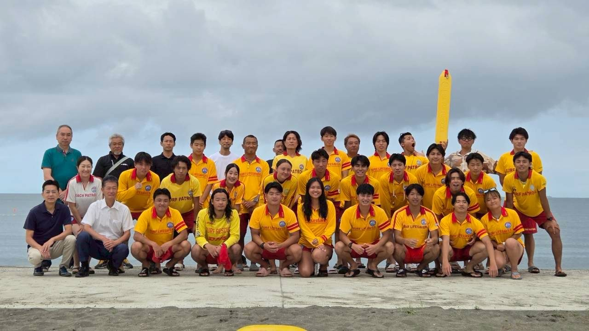

2026年 夏季監視活動が始まりました
2026年の夏季監視活動を開始しました。南房総市（南千倉・瀬戸浜）は7月17日から、館山市（北条・新井・沖ノ島・波左間）は7月18日から、2市6か所の海水浴場で監視にあたります。遊泳区域は赤と黄色のフラッグで示しています。

News
2026年の夏季監視活動を開始しました。南房総市（南千倉・瀬戸浜）は7月17日から、館山市（北条・新井・沖ノ島・波左間）は7月18日から、2市6か所の海水浴場で監視にあたります。遊泳区域は赤と黄色のフラッグで示しています。

活動のご見学、大会・イベントのライフガードのご依頼など、お気軽にご相談ください。